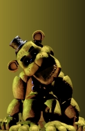
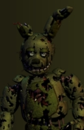

Selecione um personagem
-

-

- 
- 
Freddy
Freddy é um urso animatrônico marrom que atua como a atração principal e vocalista na pizzaria fictícia Freddy Fazbear's Pizza. Ele é conhecido por sua aparência assustadora e sua risada sinistra. Freddy é um ser amaldiçoado e possuído por uma criança